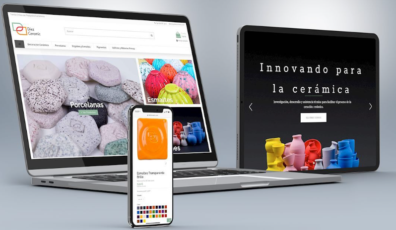

HTML adaptativo.
Erick Daniel Galaviz Saenz
Mat.238545
Bitacora 3: MobileFirst

Mobile First
Mobile first, una forma de mejora progresiva, es un enfoque de desarrollo y diseño web que
se enfoca en la priorización del diseño y el desarrollo para dispositivos móviles por encima
del diseño y desarrollo para pantallas de escritorio